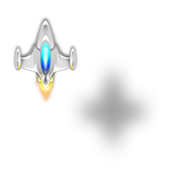

This is a multi-part tutorial series. You are currently reading part 1.
Some days ago, my son asked me how computer games are made. He’s five years old and couldn’t quite imagine how games are created, because “you can’t just paint them like animation movies, can you?”.
I quickly realized that explaining it to a child is really difficult. And so I decided to create a game, with him as the Creative Director who decides what the game should be like.
The result is a simple yet fully-functional 2D space shooter, available on Facebook. This tutorial describes how to create the game using the HTML5 canvas element and JavaScript, and how to integrate it into Facebook.
I never did game development before, and for me, the two major takeaways from this experience are a) JavaScript/Canvas game development is much more simpler than you think, and b) Facebook integration actually is a lot of fun.
I mention the second point because I always greeted Facebook development with smiles, but to be honest, it’s a very pleasing experience, and the whole social graph thing makes a lot of sense for games.
But let’s talk about game development first. As said, it was way simpler than I thought – in fact, being the old web developer that I am, I always deemed it to be black art. Turned out, it’s not difficult, it’s just completely different – and therefore only seems difficult.
When developing web services, you are used to think in terms of request and response, stateless connections, model-view-controller… – game development takes place in a completely different context.
When looking at games, I always thought “there is so much happening at the same time, so many objects interacting with each other – how do you develop code for this without ending up with a chaotic mess?”.
The most important thing to understand was the concept of the game loop, which lies at the heart of any action game: this loop continuously cycles through two steps: update and draw.
And from a high-level perspective, both steps are very simple: update just takes every game object and asks it to update its state, that is, it asks “coming from your current state, what will your state be in the next iteration of the game loop?”. Every object takes care of its own state and how to change its state when going from one game loop cycle to the next.
A very simple example is that of game object movement – let’s say you have a spaceship object with a certain state. Whenever this object is asked to update its state, it will set its position within the game world to new values, using a certain algorithm – e.g., it could have a horizontal speed value and a vertical speed value, which is the number of pixels the object moves within the game world in horizontal and vertical direction during one loop cycle.
Thus, when the spaceship object is asked to update its state, it adds the value of its horizontal speed to its horizontal position, and the value of its vertical speed to its vertical position – this is all. Because this is done every game loop cycle, the result is a moving spaceship.
Of course, the internal state of game objects might be influenced by external events – e.g., the player’s spaceship should only move if the user presses the arrow keys on his or her keyboard, and should only shoot whenever the space bar is pressed. These external events are delegated to the game object and handled there.
A third type of update logic is that of object interactions – for our game, it’s all about object collisions: did a bullet hit an enemy? Did the player’s spaceship collide with an enemy ship? The collision logic triggers certain events within the affected game objects – e.g., if the collision logic detects that an enemy is hit by a bullet from the player’s ship, it triggers the beenHit() method on that enemy. This, in turn, is just another external event which results in the enemy object changing its internal state – e.g. triggering the explosion of that enemy, or just lowering its life-points by 1; whatever the game rules are that you decide to implement.
The second step of every loop cycle is the draw step. This one is even simpler: in every loop cycle, the screen is cleared, and the application cycles through every single game object and asks it to draw itself. Because objects have changed their internal state in the update step, their position (or color, or size, or orientation) has probably changed, and they are drawn at a different position than in the previous loop cycle. This results in the illusion of object movement.
How often does the application cycle through the update->draw cycle? That’s simple – if your game runs at 60 frames per second, update and draw are called 60 times per second. And that is all.
Let’s wrap this up with some example (and pseudo) code. Let’s say we have a game world that exists of only two game objects – a spaceship and a bullet.
When the game starts, the spaceship is in the upper left corner of the world, and the bullet is at the very bottom of the world, at the horizontal center:
---------------------------------------------------------
| |
| P |
| |
| |
| |
| |
| |
| |
| |
| B |
---------------------------------------------------------
Where does the “world” actually come from? We will talk about that in a moment, let’s keep the discussion abstract for now.
When thinking about placing and moving objects in a 2D world, you need some kind of coordinate system. Let’s say the horizontal axis of our world is called x and measured from 0 (left end of the world) to 54 (right end of the world), and the vertical axis is called y and measured from 0 (upper end of the world) to 9 (bottom end of the world).
In this system, the Player P is currently located at x: 3 and y: 1, and the bullet is at position x: 27, y: 9:
0123456789012345678901234567890123456789012345678901234 x →
---------------------------------------------------------
0| |
1| P |
2| |
3| |
4| |
5| |
6| |
7| |
8| |
9| B |
---------------------------------------------------------
y
↓
These x and y coordinates are the first and most fundamental attributes that make up the current state of each game object. We will later implement these as simple numerical attributes of the objects in our application that represent game objects.
Ok, so our game objects have a basic state represented by their position coordinates. We want our objects to move when the game is running, or in our game programming lingo: we want their positional values to be altered when cycling through the update loop.
How could this be implemented? As said, the game update loop iterates over the list of all game objects and calls their update method. Thus, the update method of the Player object is the place where the logic that alters the x and y value of this object should be implemented. The same applies to the Bullet object, respectively.
For now, let’s ignore the fact that the player’s object should be steered by keystrokes. It just moves on it’s own using a very simple algorithm, implemented in its update method.
What could this algorithm look like? Again, we keep it extremely simple for now. Let’s add two other attributes to each game object: xVelocity and yVelocity. They are the parameters for our incredibly sophisticated algorithm: xVelocity is the amount of pixels that the game object moves on the x-axis, and yVelocity – well, you get the idea. Here is the pseudo-code for the player object which starts at position x: 3, y: 1 and moves from the upper left corner of the game world to its lower right corner, one pixel per loop cycle:
Player = {
x: 3
y: 1
xVelocity: 1
yVelocity: 1
update = function() {
x = x + xVelocity
y = y + yVelocity
}
}
And that’s it. The game, running at, say, 60 frames per seconds, asks the Player object 60 times per second to update() itself, resulting in a player moving diagonally across the screen. That is, if we implement some draw logic:
Player = {
x: 3
y: 1
xVelocity: 1
yVelocity: 1
symbol: 'P'
update = function() {
x = x + xVelocity
y = y + yVelocity
}
draw = function() {
drawAtPosition(x, y, symbol);
}
}
After asking all game objects to update themselves, the game loop asks them to draw themselves – update->draw->update->draw->update->draw… and so on.
Let me give you an idea of how the final game will look like:
The game world is a 740 x 640 pixel canvas. The screenshot shows 5 game objects:
- A terrain tile
- The player’s spaceship
- 2 bullets shot by the player, flying upwards
- An enemy (which is likely to be hit by the bullets in a moment)
Remember, from the game loop point of view, these objects are all treated same: in every loop cycle, each one is asked to update itself, and then each one is asked to draw itself. In every loop cycle, the update method of the terrain tile moves the tile one pixel downwards (resulting in a scroll effect), the player’s ship is moved on the x and y axis depending on the arrow keys the player presses, the bullets simply fly upwards with the speed defined in their yVelocity attribute, and the enemy ship is changing its x and y position values depending on some randomized algorithm (simply to make its movements more interesting than just moving in a straight line). If the player presses the space key, a new bullet object is created and inserted into the game world, and if a bullet objects collides with an enemy object, the enemy object and bullet object disappear (sorry, explosions do not fall within the scope of this document).
We will need to write quite some code for these mechanics to work, but at least the GFX part is dead simple: every game object on this screenshot is simply represented with a PNG image. Thanks to PNG’s alpha transparency, it’s very simple to draw the game world by drawing the image for each game object on top of each other: first the screen is cleared, then the terrain tile is drawn, then the enemy, then the bullets, then the player. The shadows of the player and enemy ship are nothing special – they are simply part of the PNG with the player’s ship and enemy ship, respectively, and are transparent by using the alpha channel of the images:

Well then, let’s get our hands dirty, and let’s start where every journey begins: at index.html.
Open your favorite editor and create a simple HTML page that provides the canvas element for our game world:
/index.html
<!DOCTYPE html>
<html>
<head></head>
<body>
<canvas id="world" width="740" height="640">
This browser can not run this game (canvas support missing).
</canvas>
</body>
</html>
Now that we talked about the game loop again and again, let’s finally create it. Not surprisingly, it’s a piece of JavaScript code. As I don’t like these “let’s put all our code into one single file because that’s so much simpler” tutorials, we should think about where to put it. How about representing the game with an object that has the update and draw cycles as methods, and starts the game loop that iterates through these cycles? We could put these into a Game constructor, in a file named Game.js.
I suggest we put this file in a lib subfolder, which itself is a subfolder of scripts. This way, we keep the different concerns of our application neatly separated. HTML files live at the root, all JavaScript goes into scripts, which in turn will be separated into lib for the building blocks of the game itself, app for the JavaScript files that relate to the HTML files (thus, the script code for /index.html will be in /scripts/app/index.js), and vendor for external libraries.
But let’s not get ahead of outselves – what we need now is the constructor for the main game object:
/scripts/lib/Game.js
var Game = function() {
this.fps = 60;
var game = this;
var gameloop = setInterval(function() {
game.updateAll();
game.drawAll();
}, 1000 / this.fps);
}
Game.prototype.updateAll = function() {
//
}
Game.prototype.drawAll = function() {
//
}
Actually, this already creates a running game – with the minor restraint that the game world is completely empty, and no action takes place.
Let’s quickly fill the world so we can experience the pleasure of seeing something on the screen.
We need at least one game object which is able to at least draw itself. We will solve this by providing a very basic player.
The player is represented by its own object. Let’s create a constructor for it:
/scripts/lib/Player.js
var Player = function(game) {
this.game = game;
this.x = 100;
this.y = 100;
}
Player.prototype.update = function() {
//
}
Player.prototype.draw = function() {
this.game.drawRectangle('#f00', this.x, this.y, 10, 10);
}
Like any other game object, the player object needs an update and a draw function. These will be called by the master game object on every cycle.
Our player doesn’t do anything yet, therefore its update method is empty, but it knows how to draw itself – by drawing a red 10 x 10 pixel rectangle into the gameworld, at its current position.
However, we don’t want to hardwire the low level canvas drawing logic into our game objects – therefore, we pass the game object into the player’s constructor, and call the appropriate drawing method on the game object. This way, the actual drawing can be handled outside the game objects, and inside the main game object.
This means we need to actually pass the game object into our player object when we create it. This is done in the Game constructor. Let’s also add the update and drawing calls to our player to the game loop:
/scripts/lib/Game.js
var Game = function() {
this.fps = 60;
this.player = new Player(this);
var game = this;
var gameloop = setInterval(function() {
game.updateAll();
game.drawAll();
}, 1000 / this.fps);
}
Game.prototype.updateAll = function() {
this.player.update();
}
Game.prototype.drawAll = function() {
this.player.draw();
}
Game.prototype.drawRectangle = function() {
//
}
Well, this still won’t put any pixels on our screen, of course. We have the <canvas> element in our index.html file, and we want to draw into it from our JavaScript code in Game.js – it’s time to put some code into place which brings both together.
Technically, you don’t draw into a canvas directly. In JavaScript, you ask the canvas element for a context, which gives you an object that provides several draw methods, like this:
var context = document.getElementById('myCanvas').getContext('2d');
context.fillStyle = '#f00';
context.fillRect(5, 10, 90, 20);
This would draw a red rectangle onto the canvas element with ID myCanvas, with the upper left corner 5 pixels from the left and 10 pixels from the top of the canvas, a width of 90 pixels, and 20 pixels high.
We need to get the 2D context of our world canvas in index.html, and implement the actual drawRectangle functionality:
/scripts/lib/Game.js
var Game = function() {
this.fps = 60;
var canvas = document.getElementById('world');
this.context = canvas.getContext('2d');
this.player = new Player(this);
var game = this;
var gameloop = setInterval(function() {
game.updateAll();
game.drawAll();
}, 1000 / this.fps);
}
Game.prototype.updateAll = function() {
this.player.update();
}
Game.prototype.drawAll = function() {
this.player.draw();
}
Game.prototype.drawRectangle = function(color, x, y, width, height) {
this.context.fillStyle = color;
this.context.fillRect(x, y, width, height);
}
Now we can wire everything together in our index.html and see our player for the first time:
/index.html
<!DOCTYPE html>
<html>
<head>
<script type="text/javascript" src="scripts/lib/Game.js"></script>
<script type="text/javascript" src="scripts/lib/Player.js"></script>
</head>
<body>
<canvas id="world" width="740" height="640">
This browser can not run this game (canvas support missing).
</canvas>
<script type="text/javascript">
var game = new Game();
</script>
</body>
</html>
Now if you open the index.html file in your browser, you see a red square. Isn’t it beautiful?
Ok, let’s add a tad of action, and make our player move across the screen:
/scripts/lib/Player.js
var Player = function(game) {
this.game = game;
this.x = 100;
this.y = 100;
}
Player.prototype.update = function() {
this.x += 1;
this.y += 1;
}
Player.prototype.draw = function() {
this.game.drawRectangle('#f00', this.x, this.y, 10, 10);
}
Reload and enjoy – but wait, what’s that? Instead of moving square, we see a bold red line being drawn over the screen. That’s because the canvas doesn’t know about our game loop – it does not know that on every loop cycle, the screen needs to be completely redrawn; it just draws everything we ask it to draw on top of each other.
This can be easily fixed. At the start of each loop cycle, we will simply fill the full canvas with one large white rectangle:
/scripts/lib/Game.js
var Game = function() {
this.fps = 60;
var canvas = document.getElementById('world');
this.context = canvas.getContext('2d');
this.context_width = canvas.width;
this.context_height = canvas.height;
this.player = new Player(this);
var game = this;
var gameloop = setInterval(function() {
game.updateAll();
game.drawAll();
}, 1000 / this.fps);
}
Game.prototype.updateAll = function() {
this.player.update();
}
Game.prototype.drawAll = function() {
this.drawRectangle('#fff', 0, 0, this.context_width, this.context_height);
this.player.draw();
}
Game.prototype.drawRectangle = function(color, x, y, width, height) {
this.context.fillStyle = color;
this.context.fillRect(x, y, width, height);
}
Refresh your browser, and you will see a moving red square. First achievement unlocked!
That’s it for today. Part 2 of this tutorial series will introduce the concept of steering our player with the arrow keys, and other goodies.
You can browse the code of part 1 at https://github.com/ManuelKiessling/ HTML5CanvasJavaScriptFacebookTutorialCode/tree/part1.
 This is the homepage and blog of Manuel Kiessling.
This is the homepage and blog of Manuel Kiessling.
{kind=link}